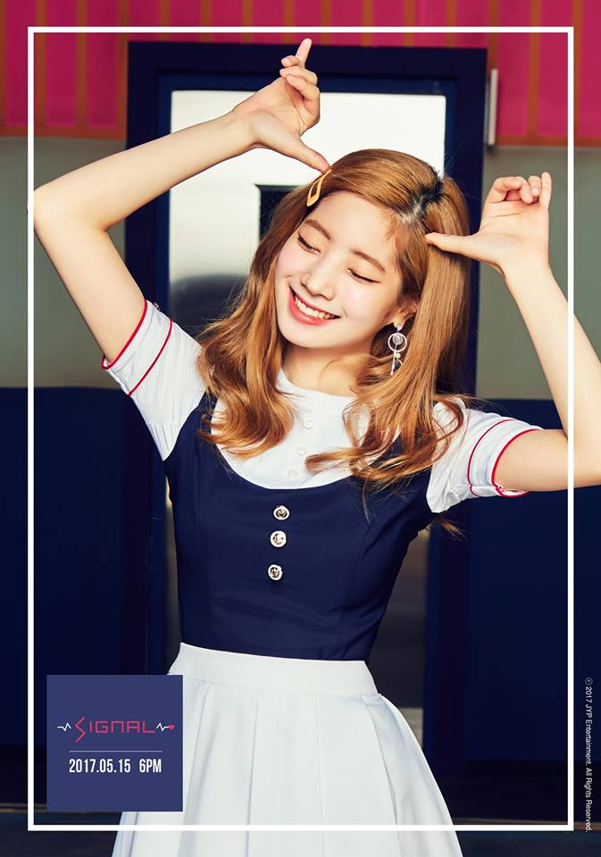

D A H Y U N

Stage Name: Dahyun
Birth Name: Kim Da Hyun (김다현)
Nationality: Korean
Position: Lead Rapper, Vocalist
Birthday: May 28, 1998
Zodiac Sign: Gemini
Official height: 165 cm (5’5″) / Approx. Real Height: 160 cm (5’3″)*
Weight: 48 kg (106 lbs)
Blood Type: O
Dahyun facts:
She was born in Seongnam, Gyeonggi-do, South Korea.
In middle school, she performed a solo in a youth dance festival and was scouted by JYP Entertainment.
She passed the audition on July 7, 2012, and officially became a trainee.
Dahyun is scared of animals (cats, dogs, etc.).
Pre-debut she was very popular due to her Eagle dance video which went viral in South Korea.
Her nickname is ‘Tofu’ because her white skin.
She was the most popular during Sixteen.
Dahyun knows how to play piano. (vlive stream)
Dahyun’s favorite drink is chocolate milk. She likes all sorts of milk.
Dahyun likes chocolate. She said she can’t live without chocolate.
Dahyun cannot watch horror movies.
Dahyun sleeps like a dead person (- that video where Mina, Jihyo, and Nayeon prank the others. XD)
She hates being alone in dark places.
When she’s stressed she smiles (in order to release the stress).
Dahyun is a Christian (Weekly Idol, according to Sunggyu).
She and Chaeyoung are in charge of washing the dishes at the dorm.
Dahyun’s eyesight is bad. She wears contact lenses.
Dahyun has the habit of touching her nose.
Dahyun met Chaeyoung for the 1st time when they were in 8th and 7th grade, respectively.
When Dahyun can’t sleep she starts watching tv.
She appeared in GOT7’s “Stop Stop It” MV and Wooyoung’s “Rose” (Japanese) MV.
Dahyun’s ideal type: “There’s too many…but someone who’s dependable like a father; Someone nice to his parents; Someone who loves me a lot”
Learn More